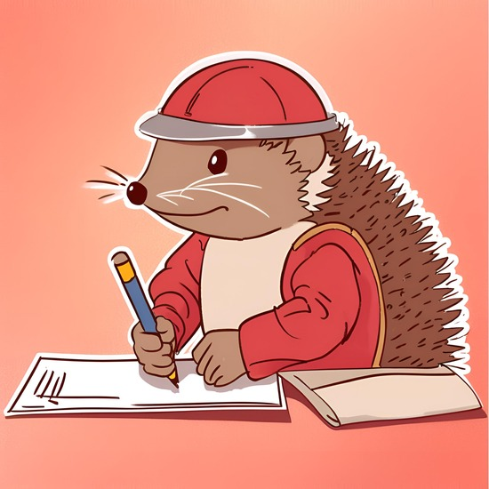

Alors que vous continuez votre chemin, vous remarquez que vous êtes suivi. En faisant un petit peu attention, vous remarquez qu'il s'agit de Pédro qui fait énormément de bruit en se cachant dans les buissons derrière vous.
Vous lui faites alors remarquer son manque de discrétion ainsi que votre surprise de le voir vous suivre de cette manière.
Malgré vos remarques, Pédro est furieux. Il exige que vous lui dessiniez un carré rouge afin de le calmer dans sa rage (oui le rouge est une couleur qui le détend)
Vous le prenez donc au mot et commencez à vous mettre au travail, bien que cette demande vous paraisse saugrenue.

Le carré doit faire 70 pixels de haut et de large, et être centré. Vous ferez le style dans une classe CSS appelée "carrerougedepedro"